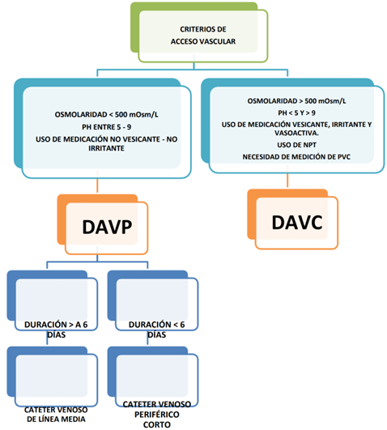
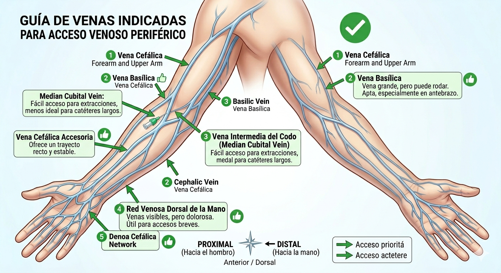
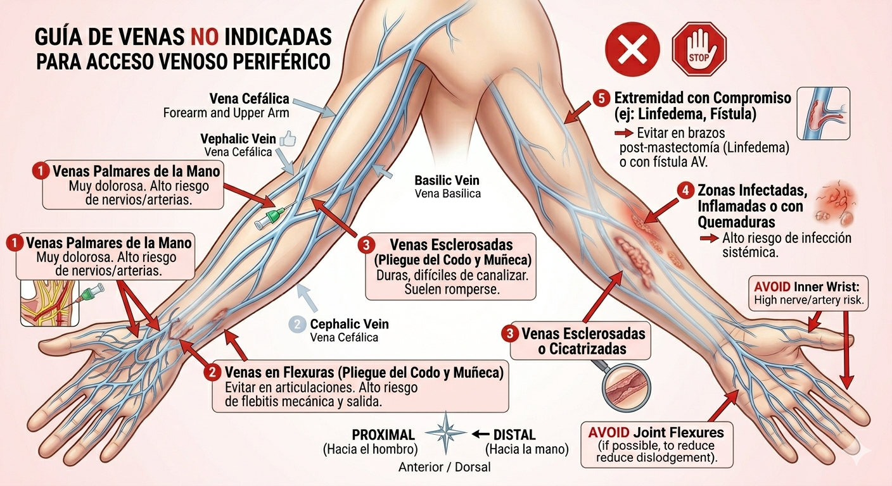
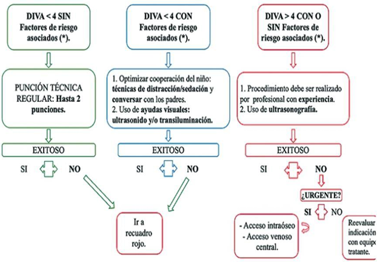

Guía Clínica de Seguridad del Paciente
Evalúa propiedades del medicamento, duración de la terapia y anatomía vascular.



Herramienta para identificar accesos venosos dificultosos. Un puntaje > 4 sugiere uso de personal experimentado y ecografía.

| Factores de Riesgo | |
|---|---|
| Obesidad | Edema de extremidades |
| Malformaciones Osteomusculares | Deshidratación moderada a grave |
| Tratamiento con quimioterapia | Historia de acceso venoso dificil y/o múltiples punciones |
| Diabetes Mellitus Pacientes de diálisis |
Ansiedad del paciente y/o padres refieren que el niño es poco probable que coopere |
| Vena | Diámetro aprox. | Velocidad de Flujo |
|---|---|---|
| Metacarpianas | 2-5 mm | 10 ml/min |
| Antebrazo | 6 mm | 20 ml/min |
| Basílica | 8 mm | 90-150 ml/min |
| Axilar | 16 mm | 150-350 ml/min |
| Vena Subclavia | 19 mm | 350-1500 ml/min |
| Cava Superior | 20 mm | 2000 ml/min |
| Variable | Opciones | Puntos |
|---|---|---|
| Vena visible después de torniquete | Visible No visible |
0 2 |
| Vena palpable después de torniquete | Palpable No palpable |
0 2 |
| Edad | Mayor o igual a 3 años 1 - 2 años Menor a 1 año |
0 1 3 |
| Antecedentes de prematurez edad gestacional menor a 38 semanas |
No Si |
0 3 |